HDF User’s Guide
Version 4.2r4[Top] [Prev][Next]
|
|
HDF User’s GuideVersion 4.2r4 |
[Top] [Prev][Next] |
Chapter 14 -- HDF Performance Issues
14.1 Chapter Overview and Introduction
This chapter describes many of the concepts the HDF user should understand to gain better performance from their applications that use the HDF library. It also covers many of the ways in which HDF can be used to cause impaired performance and methods for correcting these problems.
As stated earlier in this manual, HDF has been designed to be very general-purpose, and it has been used in many different applications involving scientific data. Each application has its own set of software and hardware resource constraints that will affect performance in a different way, and to a different extent, from the resource constraints in other applications.
Therefore, it is impossible to outline all of the performance issues that may relate to a particular application of HDF. However, this chapter should give the reader sufficient knowledge of the most common performance issues encountered by the HDF Group. This knowledge should enable the reader to explore different ways of storing data on the platforms they use for the purpose of increasing library performance.
14.2 Examples of HDF Performance Enhancement
In this section, four pairs of HDF object models along with their C implementations will be presented. Each pair will illustrate a specific aspect of HDF library performance as it relates to scientific data sets. They will be employed here as general pointers on how to model scientific data sets for optimized performance.
In developing and testing these examples, the Sun Solaris OS version supported by HDF version 4.1 release 1 was used. Version 2.0 of the Quantify performance profiler was used to measure the relative differences in library performance between the SDS models in each pair. It should be noted that, while the examples reliably reflect which SDS configurations result in better performance, the specifics of how much performance will be improved depend on many factors such as OS configuration, compiler used and profiler used. Therefore, any specific measurements of performance mentioned in the chapter should be interpreted only as general indicators.
The reader should keep in mind that the following examples have been designed for illustrative purposes only, and should not be considered as real-world examples. It is expected that the reader will apply the library performance concepts covered by these examples to their specific usage of the HDF library.
14.2.1 One Large SDS versus Several Smaller SDSs
The scientific data set is an example of what in HDF parlance is referred to as a primary object. The primary objects accessed and manipulated by the HDF library include, beside scientific data sets, raster images, annotations, vdatas and vgroups. Each primary object has metadata, or data describing the data, associated with it. Refer to the HDF Specifications Manual for a description of the components of this metadata and how to calculate its size on disk.
An opportunity for performance enhancement can exist when the size of the metadata far exceeds the size of the data described by the metadata. In this situation, more CPU time and disk space will be used to maintain the metadata than the data contained in the SDS. Consolidating the data into fewer, or even one, SDS can increase performance.
To illustrate this, consider 1,000 1 x 1 x 1 element scientific data sets of 32-bit floating-point numbers. No user-defined dimension, dimension scales or fill values have been defined or created.
FIGURE 14a 1,000 1 x 1 x 1 Element Scientific Data Sets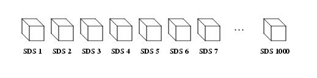In this example, 1,000 32-bit floating-point numbers are first buffered in-core, then written as 1,000 SDSs.
In Table 14A, the results of this operation are reflected in two metrics: the total number of CPU cycles used by the example program, and the size of the HDF file after the write operation.
TABLE 14A Results of the Write Operation to 1,000 1x1x1 Element Scientific Data SetsNow the 1,000 32-bit floating point numbers that were split into 1,000 SDSs are combined into one 10 x 10 x 10 element SDS. This is illustrated in the following figure.
FIGURE 14b One 10 x 10 x 10 Element Scientific Data Set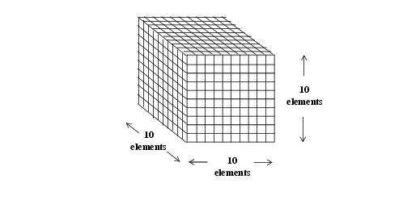As with the last example, 1,000 32-bit floating-point numbers are first buffered in-core, then written to a single SDS. The following table contains the performance metrics of this operation.
TABLE 14B Results of the Write Operation to One 10x10x10 Element Scientific Data SetIt is apparent from these results that merging the data into one scientific data set results in a substantial increase in I/O efficiency - in this case, a 99.9% reduction in total CPU load. In addition, the size of the HDF file is dramatically reduced by a factor of more than 100, even through the amount of SDS data stored is the same.
The extent to which the data consolidation described in this section should be done is dependent on the specific I/O requirements of the HDF user application.
14.2.2 Sharing Dimensions between Scientific Data Sets
When several scientific data sets have dimensions of the same length, name and data type, they can share these dimensions to reduce storage overhead and CPU cycles in writing out data.
To illustrate this, again consider the example of 1,000 1 x 1 x 1 scientific data sets of 32-bit floating point numbers. Three dimensions are attached by default to each scientific data set by the HDF library. The HDF library assigns each of these dimensions a default name prefaced by the string fakeDim. See Chapter 3, Scientific Data Sets (SD API), for a specific explanation of default dimension naming conventions.
FIGURE 14c 1,000 1 x 1 x 1 Element Scientific Data Sets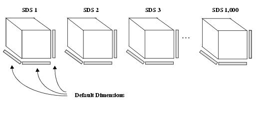One 32-bit floating point number is written to each scientific data set. The following table lists the performance metrics of this operation.
TABLE 14C Results of the Write Operation to 1,000 1x1x1 Element Scientific Data SetsNow consider the 1,000 SDSs described previously in this section. In this case, the 1,000 SDSs share the program-defined X_Axis, Y_Axis and Z_Axis dimensions as illustrated in the following figure.
FIGURE 14d 1,000 1 x 1 x 1 Element Scientific Data Sets Sharing Dimensions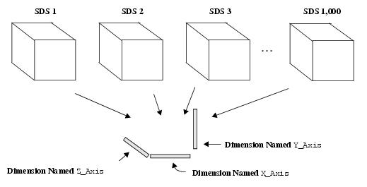The performance metrics that result from writing one 32-bit floating-point number to each dataset are in the following table.
TABLE 14D Results of the Write Operation to 1,000 1x1x1 SDSs with Shared DimensionsAn 82% performance improvement in this example program can be seen from the information in this table, due to the fewer write operations involved in writing dimension data to shared dimensions. Also, the HDF file is significantly smaller in this case, due to the smaller amount of dimension data that is written.
14.2.3 Setting the Fill Mode
When a scientific data set is created, the default action of the HDF library is to fill every element with the default fill value. This action can be disabled, and reenabled once it has been disabled, by a call to the SDsetfillmode routine.
The library's default writing of fill values can degrade performance when, after the fill values have been written, every element in the dataset is written to again. This operation involves writing every element in the SDS twice. This section will demonstrate that disabling the initial fill value write operation by calling SDsetfillmode can improve library performance.
Consider 50 10 x 10 x 10 scientific data sets of 32-bit floating-point numbers.
FIGURE 14e 50 10 x 10 x 10 Element Scientific Data Sets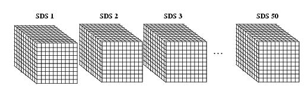By default, the fill value is written to every element in all 50 SDSs. The contents of a two-dimensional buffer containing 32-bit floating-point numbers is then written to these datasets. The way these two-dimensional slices are written to the three-dimensional SDSs is illustrated in the following figure. Each slice (represented by each shaded area in the figure) is written along the third dimension of each SDS, or if the dimensions are related to a Cartesian grid, the z-dimension, until the entire SDS is filled.
FIGURE 14f Writing to the 50 10 x 10 x 10 Element Scientific Data Sets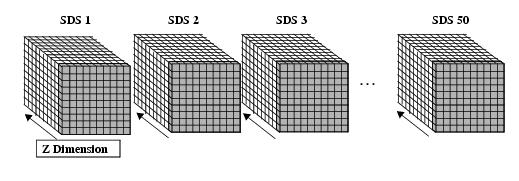It should be noted that the reason each SDS is not rewritten to in one write operation is because the HDF library will detect this and automatically disable the initial write of the fill values as a performance-saving measure. Hence, the partial writes in two-dimensional slabs.
The following table shows the number of CPU cycles needed in our tests to perform this write operation with the fill value write enabled. The "Size of the HDF File" metric has been left out of this table, because it will not change substantially regardless of whether the default fill value write operation is enabled.
TABLE 14E Results of the Write Operation to the 50 10x10x10 SDSs with the Fill Value Write EnabledThe following table shows the number of CPU cycles needed to perform the same write operation with the fill value write disabled.
TABLE 14F Results of the Write Operation to the 50 SDSs with the Fill Value Write DisabledThe information in these tables demonstrate that eliminating the I/O overhead of the default fill value write operation when an entire SDS is rewritten to results in a substantial reduction of the CPU cycles needed to perform the operation -- in this case, a reduction of 33%.
14.2.4 Disabling Fake Dimension Scale Values in Large One-dimensional Scientific Data Sets
In versions 4.0 and earlier of the HDF library, dimension scales were represented by a vgroup containing a vdata. This vdata consisted of as many records as there are elements along the dimension. Each record contained one number which represented each value along the dimension scale, and these values are referred to as fake dimension scale values.
In HDF version 4.0 a new representation of the dimension scale was implemented alongside the old one -- a vdata containing only one value representing the total number of values in the dimension scale. In version 4.1 release 2, this representation was made the default. A compatible mode is also supported where both the older and newer representations of the dimension scale are written to file.
In the earlier representation, a substantial amount of I/O overhead is involved in writing the fake dimension scale values into the vdata. When one of the dimensions of the SDS array is very large, performance can be improved, and the size of the HDF file can be reduced, if the old representation of dimension scales is disabled by a call to the SDsetdimval_comp routine. The examples in this section will illustrate this.
First, consider one 10,000 element array of 32-bit floating point numbers, as shown in the following figure. Both the new and old dimension scale representations are enabled by the library.
FIGURE 14g One 10,000 Element Scientific Data Set with Old- and New-Style Dimension Scales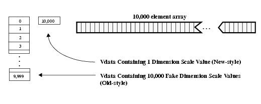10,000 32-bit floating-point numbers are buffered in-core, then written to the scientific data set. In addition, 10,000 integers are written to the SDS as dimension scale values. The following table contains the results of this operation from our tests.
TABLE 14G Results of the SDS Write Operation with the New and Old Dimension ScalesNow consider the same SDS with the fake dimension scale values disabled. The following figure illustrates this.
FIGURE 14h One 10,000 Element Scientific Data Set with the Old-Style Dimension Scale Disabled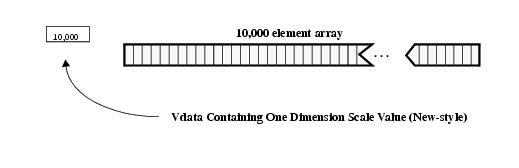The following table contains the performance metrics of this write operation.
TABLE 14H Results of the SDS Write Operation with Only the New Dimension ScaleThe old-style dimension scale is not written to the HDF file, which results in the size of the file being reduced by nearly 50%. There is also a marginal reduction in the total number of CPU cycles.
14.3 Data Chunking
14.3.1 What Is Data Chunking?
Data chunking is a method of organizing data within an SDS where data is stored in chunks of a predefined size, rather than contiguously by array element. Its two-dimensional instance is sometimes referred to as data tiling. Data chunking is generally beneficial to I/O performance in very large arrays, e.g., arrays with thousands of rows and columns.
If correctly applied, data chunking may reduce the number of seeks through the SDS data array to find the data to be read or written, thereby improving I/O performance. However, it should be remembered that data chunking, if incorrectly applied, can significantly reduce the performance of reading and/or writing to an SDS. Knowledge of how chunked SDSs are created and accessed and application-specific knowledge of how data is to be read from the chunked SDSs are necessary in avoiding situations where data chunking works against the goal of I/O performance optimization.
The following figure illustrates the difference between a non-chunked SDS and a chunked SDS.
FIGURE 14i Comparison between Chunked and Non-chunked Scientific Data Sets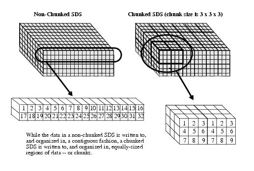14.3.2 Writing Concerns and Reading Concerns in Chunking
There are issues in working with chunks that are related to the reading process and others that are related to the writing process.
Specifically, the issues that affect the process of reading from chunked SDSs are
The issues that affect the process of writing to chunked SDSs are
14.3.3 Chunking without Compression
Accessing Subsets According to Storage Order
The main consideration to keep in mind when subsetting from chunked and non-chunked SDSs is that if the subset can be accessed in the same order as it was stored, subsetting will be efficient. If not, subsetting may result in less-than-optimal performance considering the number of elements to be accessed.
To illustrate this, the instance of subsetting in non-chunked SDSs will first be described. Consider the example of a non-chunked, two-dimensional, 2,000 x 1,600 SDS array of integer data. The following figure shows how this array is filled with data in a row-wise fashion. (Each square in the array shown represents 100 x 100 integers.)
FIGURE 14j Filling a Two-dimensional Array with Data Using Row-major Ordering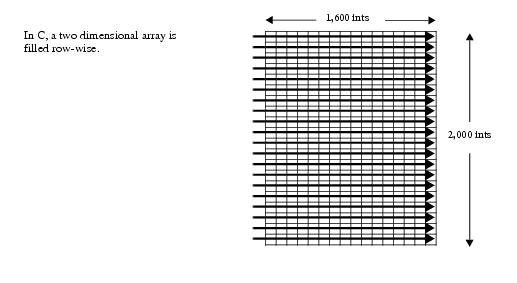The most efficient way an application can read a row of data, or a portion of a row, from this array, is a contiguous, row-wise read of array elements. This is because this is the way the data was originally written to the array. Only one seek is needed to perform this. (See Figure 14k.)
FIGURE 14k Number of Seeks Needed to Access a Row of Data in a Non-chunked SDS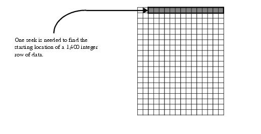If the subset of data to be read from this array is one 2,000 integer column, then 2,000 seeks will be required to complete the operation. This is the most inefficient method of reading this subset as nearly all of the array locations will be accessed in the process of seeking to a relatively small number of target locations.
FIGURE 14l Number of Seeks Needed to Access a Column of Data in a Non-chunked SDS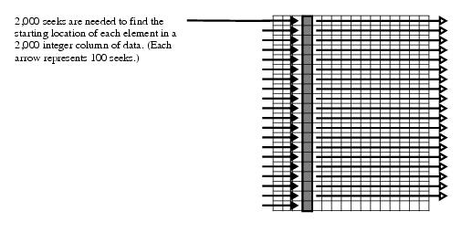Now suppose this SDS is chunked, and the chunk size is 400 x 400 integers. A read of the aforementioned row is performed. In this case, four seeks are needed to read all of the chunks that contain the target locations. This is less efficient than the one seek needed in the non-chunked SDS.
FIGURE 14m Number of Seeks Needed to Access a Row of Data in a Chunked SDS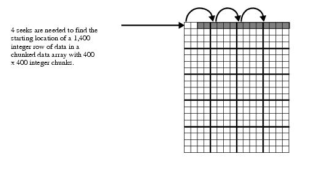To read the aforementioned column of data, five chunks must be read into memory in order to access the 2,000 locations of the subset. Therefore, five seeks to the starting location of each of these chunks are necessary to complete the read operation, far fewer than the 2,000 needed in the non-chunked SDS.
FIGURE 14n Number of Seeks Needed to Access a Column of Data in a Chunked SDS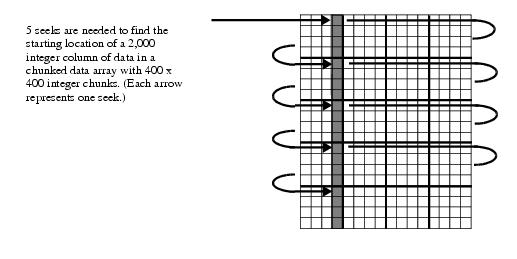These examples show that, in many cases, chunking can be used to reduce the I/O overhead of subsetting, but in certain cases, chunking can impair I/O performance.
The efficiency of subsetting from chunked SDSs is partly determined by the size of the chunk: the smaller the chunk size, the more seeks will be necessary. Chunking can substantially improve I/O performance when data is read along the slowest-varying dimension. It can substantially degrade performance when data is read along the fastest-varying dimension.
14.3.4 Chunking with Compression
Chunking can be particularly effective when used in conjunction with compression. It allows subsets to be read (or written) without having to uncompress (or compress) the entire array.
Consider the example of a tiled, two-dimensional SDS containing one million bytes of image data. Each tile of image data has been compressed as illustrated in the following figure.
FIGURE 14o Compressing and Writing Chunks of Data to a Compressed and Tiled SDS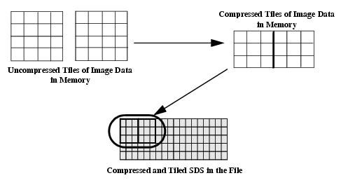When it becomes necessary to read a subset of the image data, the application passes in the location of a tile, reads the entire tile into a buffer, and extracts the data-of-interest from that buffer.
FIGURE 14p Extracting a Subset from a Compressed and Tiled SDS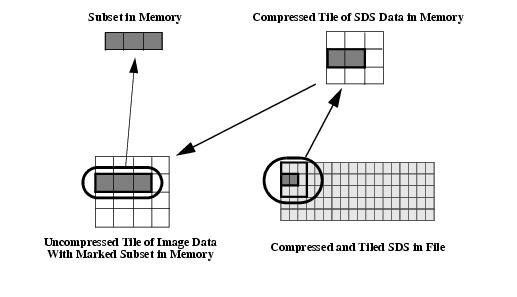In a compressed and non-tiled SDS, retrieving a subset of the compressed image data necessitates reading the entire contents of the SDS array into a memory buffer and uncompressing it in-core. (See Figure 14q.) The subset is then extracted from this buffer. (Keep in mind that, even though the illustrations show two-dimensional data tiles for clarity, this process can be extended to data chunks of any number of dimensions.)
FIGURE 14q Extracting a Subset from a Compressed Non-tiled SDS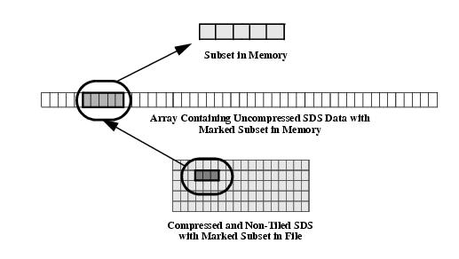As compressed image files can be as large as hundreds of megabytes in size, and a gigabyte or more uncompressed, it is clear that the I/O requirements of reading to and writing from non-tiled, compressed SDSs can be immense, if not prohibitive. Add to this the additional I/O burden inherent in situations where portions of several image files must be read at the same time for comparison, and the benefits of tiling become even more apparent.
NOTE: It is recommended that the SDwritechunk routine be used to write to a compressed and chunked SDS. SDwritechunk can perform this operation more efficiently than the combination of SDsetcompress and SDwritedata. This is because the chunk information provided by the user to the SDwritechunk routine must be retrieved from the file by SDwritedata, and therefore involves more computational overhead.
14.3.5 Effect of Chunk Size on Performance
The main concern in modelling data for chunking is that the chunk size be approximately equal to the average expected size of the data block needed by the application.
If the chunk size is substantially larger than this, increased I/O overhead will be involved in reading the chunk and increased performance overhead will be involved in the decompression of the data if it is compressed. If the chunk size is substantially smaller than this, increased performance and memory/disk storage overhead will be involved in the HDF library's operations of accessing and keeping track of more chunks, as well as the danger of exceeding the maximum number of chunks per file. (64K)
It is recommended that the chunk size be at least 8K bytes.
14.3.6 Insufficient Chunk Cache Space Can Impair Chunking Performance
The HDF library provides caching chunks. This can substantially improve I/O performance when a particular chunk must be accessed more than once.
There is a potential performance problem when subsets are read from chunked datasets and insufficient chunk cache space has been allocated. The cause of this problem is the fact that two separate levels of the library are working to read the subset into memory and these two levels have a different perspective on how the data in the dataset is organized.
Specifically, higher-level routines like SDreaddata access the data in a strictly row-wise fashion, not according to the chunked layout. However, the lower-level code that directly performs the read operation accesses the data according to the chunked layout.
As an illustration of this, consider the 4 x 12 dataset depicted in the following figure.
FIGURE 14r Example 4 x 12 Element Scientific Data Set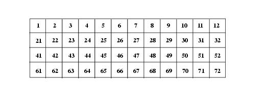Suppose this dataset is untiled, and the subset shown in the following figure must be read.
FIGURE 14s 2 x 8 Element Subset of the 4 x 12 Scientific Data Set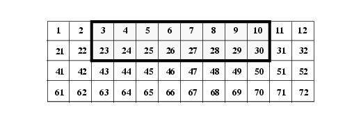As this dataset is untiled, the numbers are stored in linear order. SDreaddata finds the longest contiguous stream of numbers, and requests the lower level of the library code to read it into memory. First, the first row of numbers will be read:
Then the second row:
This involves two reads, two disk accesses and sixteen numbers.
Now suppose that this dataset is tiled with 2 x 2 element tiles. On the disk, the data in this dataset is stored as twelve separate tiles, which for the purposes of this example will be labelled A through L.
FIGURE 14t 4 x 12 Element Data Set with 2 x 2 Element Tiles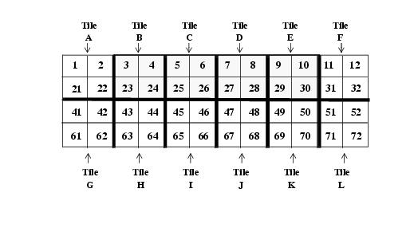Also, the chunk cache size is set to 2.
A request is made to read the aforementioned subset of numbers into memory. As before, SDreaddata will determine the order the numbers will be read in. The routine has no information about the tiled layout. The higher-level code will again request the values in the first rows of tiles B through E from the lower level code on the first read operation.
In order to access those numbers the lower level code must read in four tiles: B, C, D, E. It reads in tiles B and C, retrieving the values 3, 4, 5, and 6. However, as the cache space is now completely filled, it must overwrite tile B in the cache to access the values 7 and 8, which are in tile D. It then has to overwrite tile C to access the values 9 and 10, which are in tile E. Note that, in each case, half of the values from the tiles that are read in are unused, even though those values will be needed later.
Next, the higher-level code requests the second row of the subset. The lower-level code must reread tile B to access the values 23 and 24. But tile B is no longer in the chunk cache. In order to access tile B, the lower-level code must overwrite tile D, and so on. By the time the subset read operation is complete, it has had to read in each of the tiles twice. Also, it has had to perform 8 disk accesses and has read 32 values.
Now consider a more practical example with the following parameters:
If the dataset is untiled the numbers are read into memory row-by-row. This involves 300 disk accesses for 300 rows, with each disk access reading in 1,000 numbers. The total number of numbers that will be read is 300,000.
Suppose the dataset is tiled as follows:
Each square in the following figure represents one 100 x 100 element region of the dataset. Five tiles span the 300 x 1,000 target subset. For the purposes of this example, they will be labelled A, B, C, D and E.
FIGURE 14u 5 200 x 300 Element Tiles Labelled A, B, C, D and E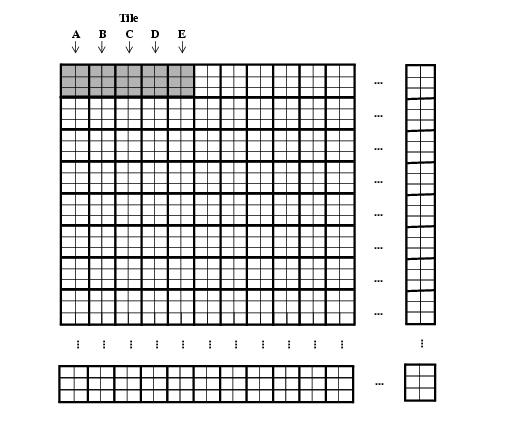First, the higher-level code instructs the lower-level code to read in the first row of subset numbers. The lower-level code must read all five tiles (A through E) into memory, as they all contain numbers in the first row. Tiles A and B are read into the cache without problem, then the following set of cache overwrites occurs.
When the first row has been read, the cache contains tiles D and E.
The second row is then read. The higher-level code first requests tile A, however the cache is full, so it must overwrite tile D to read tile A. Then the following set of cache overwrites occur.
For each row, five tiles must be read in. No actual caching results from this overwriting. When the subset read operation is complete, 300 * 5 = 1,500 tiles have been read, or 60,000 * 1,500 = 90,000,000 numbers.
Essentially, five times more disk accesses are being performed and 900 times more data is being read than with the untiled 3,000 x 8,400 dataset. The severity of the performance degradation increases in a non-linear fashion as the size of the dataset increases.
From this example it should be apparent that, to prevent this kind of chunk cache "thrashing" from occurring, the size of the chunk cache should be made equal to, or greater than, the number of chunks along the fastest-varying dimension of the dataset. In this case, the chunk cache size should be set to 4.
When a chunked SDS is opened for reading or writing, the default cache size is set to the number of chunks along the fastest-varying dimension of the SDS. This will prevent cache thrashing from occurring in situations where the user does not set the size of the the chunk cache. Caution should be exercised by the user when altering this default chunk cache size.
14.4 Block Size Tuning Issues
A key to I/O performance in HDF is the number of disk accesses that must be made during any
I/O operation. If you can decrease significantly the number of disk accesses required, you may be able to improve performance correspondingly. In this section we examine two such strategies for improving HDF I/O performance.14.4.1 Tuning Data Descriptor Block Size to Enhance Performance
HDF objects are identified in HDF files by 12-byte headers called data descriptors (DDs). Most composite HDF objects, such as SDSs, are made up of many small HDF objects, so it is not unusual to have a large number of DDs in an HDF file. DDs are stored in blocks called data descriptor blocks (DD blocks).
When an HDF file is created, the file's DD block size is specified. The default size is 16 DDs per DD block. When you start putting objects into an HDF file, their DDs are inserted into the first DD block. When the DD block gets filled up, a new DD block is created, stored at some other location in the file, and linked with the previous DD block. If a large number of objects are stored in an HDF file whose DD block size is small, a large number of DD blocks will be needed, and each DD block is likely to be stored on a different disk page.
Consider, for example, an HDF file with 1,000 SDSs and a DD block size of 16. Each SDS could easily require 10 DDs to describe all the objects comprising the SDS, so the entire file might contain 10,000 DDs. This would require 625 (10,000/16) DD blocks, each stored on a different disk page.
Whenever an HDF file is opened, all of the DDs are read into memory. Hence, in our example, 625 disk accesses might be required just to open the file.
Fortunately, there is a way we can use this kind of information to improve performance. When we create an HDF file, we can specify the DD block size. If we know that the file will have many objects stored in it, we should choose a large DD block size so that each disk access will read in a large number of DDs, and hence there will be fewer disk accesses. In our example, we might have chosen the DD block size to be 10,000, resulting in only one disk access. (Of course, this example goes deliberately to a logical extreme. For a variety of reasons, a more common approach would be to set the DD block size to something between 1,000 and 5,000 DDs.)
From this discussion we can derive the following rules of thumb for achieving good performance by altering the DD block size.
- Increasing the size of the data descriptor block may improve performance when opening a file, especially when working with large HDF files with lots of objects. It will reduce the number of times that HDF has to go out and read another DD block. This will be particularly valuable in code that does large numbers of HDF file opens.
- The same principle applies when closing an HDF file that has been written to. Since all DDs are flushed to an HDF file when it is written to and then closed, the DD block size can similarly impact performance.
- Notice that these actions only affect the opening and closing of a file. Once a file is opened, DDs are accessed in memory; no further disk accesses are required.
- Large DD blocks can negatively affect storage efficiency, particularly if very large DD blocks are used. Since the last DD block may only be partially filled up, you probably should not use large DD blocks for very small HDF files.
14.4.2 Tuning Linked Block Size to Enhance Performance
Linked blocks get created whenever compression, chunking, external files, or appendable datasets are used. They provide a means of linking new data blocks to a pre-existing data element. If you have ever looked at an HDF file and seen Special Scientific Data or Linked Block Indicator tags with strange tag values, these are used in specifying linked blocks. As with DD blocks, linked block size can affect both storage efficiency and I/O performance.
You can change the linked block size for SDSs by use of the function SDsetblocksize. To change the linked block size for Vdatas, you must edit the hlimits.h file, change the value of HDF_APPENDABLE_BLOCK_LEN, and re-build the HDF library. Changing the linked block size only affects the size of the linked blocks used after the change is made; it does not affect the size of blocks that have already been written.
There is a certain amount of overhead when creating linked blocks. For every linked block that is added there will be a specified number of block accesses, disk space used, and reference numbers added to the file. If you increase the size of the linked block, it will decrease the number of block accesses, disk space used, and reference numbers added to the file. Making the linked block size larger will decrease the number of reference numbers required; this is sometimes necessary because there are a limited number of available reference numbers.
Linked block size can also affect I/O performance, depending on how the data is accessed. If the data will typically be accessed in large chunks, then making the linked block size large could improve performance. If the data is accessed in small chunks, then making the linked block size small could improve performance.
If data will be randomly accessed in small amounts, then it is better to have small linked blocks.
Ideally one might say that making the linked block size equal to the size of the dataset that will typically be accessed, is the best solution. However, there are other things that will affect performance, such as the operating system being used, the sector size on the disk being accessed, the amount of memory available, and access patterns.
Here are some rules of thumb for specifying linked block size:
- Linked block size should be at least as large as the smallest number of bytes accessed in a single disk access. This amount varies from one system to another, but 4K bytes is probably a safe minimum.
- Linked block size should be a power of 2.
- Linked blocks should be approximately equal to the number of bytes accessed in a typical access. This rule should be mitigated by the amount of locality from one disk access to another, however, as the next rule indicates.
- If memory is large, it may be possible to take advantage of caching that your operating system does by using a large block size. If successive accesses are close to one another, blocks may be cached by the OS, so that actual physical disk accesses are not always required. If successive accesses are not close to one another, this strategy could backfire, however.
- Although very large blocks can result in efficient access, they can also result in inefficient storage. For instance if the block size is 100K bytes, and 101K bytes of data are stored per SDS in an HDF file, the file will be twice as large as necessary.
Unfortunately, there are so many factors affected by block size that there is no simple formula that you can follow for deciding what the linked block size should be. A little experimentation on the target platform can help a great deal in determining the ideal block size for your situation.
14.4.3 Unlimited Dimension Data Sets (SDSs and Vdatas) and Performance
In some circumstances, repeatedly appending to unlimited dimension data sets can lead to significant performance problems.
Each time data is appended to a Vdata or an unlimited dimension SDS, a new linked block may be created. Eventually, the linked block list may become so large that data seeking performance deteriorates substantially. In the worst case, one can exceed the allowable number of reference numbers, corrupting the HDF file.
In many such instances, increasing the linked block size (see Section 14.4.2 in this User's Guide or, for SDSs only, SDsetblocksize/sfsblsz in the HDF Reference Manual) or DD block size (see Section 14.4.1) will alleviate the reference number problems and improve performance.
|
HDF4.2r4 - February 2009 Copyright |
The HDF Group www.hdfgroup.org |